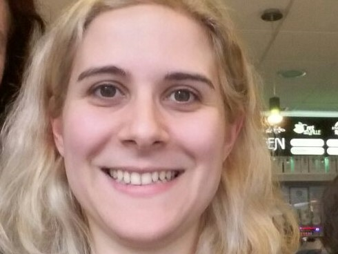

EXPERIENCIA LABORAL (como economista):
Senior Quantitaive Analyst en CRISIL (2019-actualidad)
Validación/Revisión de Modelos de Riesgo crediticio (Retail and Macro Models).
Seguimiento de Performance de modelos.
Analista Macro y de Comercio Exterior en ABECEB (2018-2019)
Seguimiento del Intercambio Comercial Argentino. Actualización de bases de datos. Generación de reportes.
Seguimiento del desempeño de economías regionales. Reportes, presentaciones y análisis ad-hoc para los clientes.
Analista Macro y de Turismo Ssr. en MinTur- Ministerio de Turismo de la Nación (2012-2013)
Seguimiento económico y evaluación de la actividad turística en Argentina y el mundo.
Análisis de impacto de políticas (fiscales/monetarias) sobre el sector turístico local.
Forecast de variables turísticas.
Analista Macro y Sectorial en MEcon-Ministerio de Economía de la Nación (2009-2012)
Informes y presentaciones de coyuntura Macro.
Elaboración de reportes sectoriales "ad-hoc".
HISTORIAL ACADÉMICO (como economista):
Universidad de Sevilla-PhD. in Economics (2015-2019)
Tesis sobresaliente (Cum Laude).
2 JCR publicados(link de acceso):
Meta-análisis de accidentes en USA
Panel de datos de fatalities en España
Università di Roma Tre-Master in Management dell'Energia e dell'Ambiente (2014-2015)
Universidad Nacional de La Plata-Master en Economía (tesis pendiente) (2010-2011)
Universidad de Buenos Aires-Licenciada en Economía (2002-2008)
LOGROS DE LOS ÚLTIMOS AÑOS:
- 2019, 2020: Validación de grandes modelos macro para el economía de USA y global
- 2017:Cambridge Advanced Exam aprobado
- 2018, 2019:Cambridge Proficiency Exam (preparado, lista para rendir)
